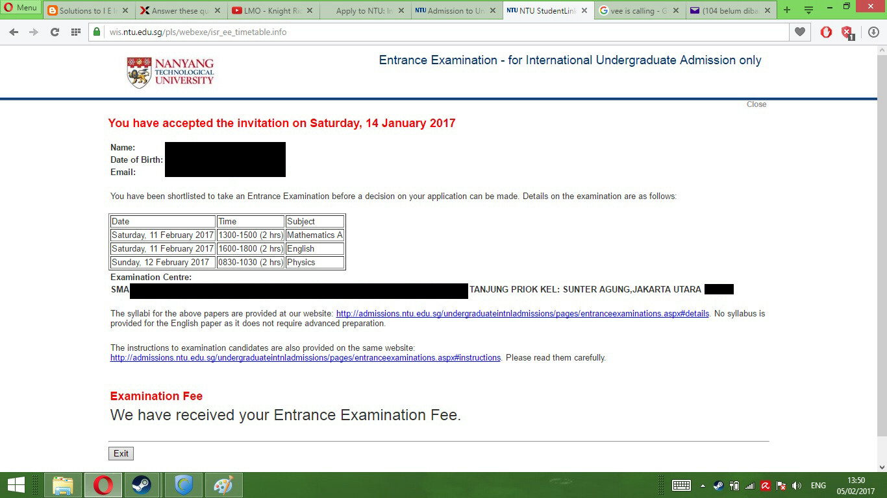

30 July 2017
Pada saat SMP saya pernah mendaftar di salah satu SMA favorit di Surabaya. Namun takdir berkata lain. Tidak ada nama saya dalam daftar siswa yang diterima di SMA tersebut. Rasa sakit tersebut saya simpan dalam lubuk hati saya, agar saya selalu diingatkan dan tidak akan lagi menyesal supaya saya dapat terus berjuang dalam meraih masa depan. Dan jawaban tersebut akan tersedia saat aku mengikutinya.
Tiga tahun kemudian, aku sudah kelas tiga, saat dimana kita bingung mencari perguruan tinggi. Namun pada saat itu saya rasa, perjuangan yang saya lakukan tidak cukup. Aku mulai pasrah dan mencoba melepas mimpi itu. Nilai rata-rata saya tiap semester hanya 84. Saya merasa usaha yang saya lakukan tidak dapat membawa saya ke kancah luar. Saya mulai melapangkan dada saya untuk menerima masa depanku yang semakin sempit. Namun hal tersebut tidak bertahan lama.
Kotak suara pengumuman di sekolahku mengatakan bahwa pihak Nanyang Technological University akan mengadakan presentasi di ruang perpustakaan untuk mengundang para siswa di sekolah kami untuk menjadi bagian dari keluarga besar NTU. Awalnya aku agak pesimistik mendengar hal itu karena aku merasa aku tidak mungkin diterima(Baca : Kiasu (Kya-Soo); takut kalah sebelum berperang, dengan prinsip tidak boleh menunjukan kegagalan di depan orang lain). Namun mengingat masuk NUS adalah cita-citaku sejak SMP, saya mengajukan diri untuk datang ke ruang perpustakaan.
Setelah presentasi, saya waktu itu masih bingung karena harganya mahal (300 juta/tahun tanpa beasiswa, 200 juta/tahun dengan tuition grant). Meskipun kita bisa minta tuition grant ( Baca : Kontrak Kerja )atau ikut beasiswa ASEAN, saya rasa skalanya tidak dapat digapai. Namun saya putuskan untuk memulai perjuangan saya. Kenapa? Karena kalau diluar negeri itu yang harusnya dipikirkan bukan beasiswanya, tetapi STATUS PENERIMAAN ANDA! Jadi saya mulai berhenti untuk memikirkan beasiswa (meskipun berharap mendapatkan tuition grant XD).
Anda mungkin bokek saat keluar dari Universitas. Namun setidaknya mikir, di NTU ada program magang dibayar dengan gaji minimal 30 juta. Dan tempat magangnya bukan sembarangan. Mereka punya program magang dengan BMW, Rolls-Royce, Exxon mobil, Nestle, 3M, Johnson and Johnson, serta punya kemungkinan bisa disuruh pergi ke luar negeri buat magang setidaknya. Belum lagi NTU adalah universitas top di Asia sehingga banyak perusahaan yang doyan sama alumninya. Kadang-kadang gajinya bisa 50 juta per bulan (biasanya untuk fakultas teknik). Sehingga dalam 4 tahun Anda sudah balik modal setidaknya (Kecuali kalau Anda mengambil loan, mungkin ceritanya beda lagi).
Saya mulai menyusun rencana dan jadwal belajar saya. Selain itu saya juga ikut les TOEFL sekalian bimbingan A-Level. Rata-rata soalnya A-Level itu susah-gampang. Yang ditekankan itu bukan referensi soal seperti di Indonesia, melainkan konsep. Kalau di Indonesia mungkin soal UTS tahun lalu dengan soal UTS yang sekarang sama saja. Kalau di A-Level, soalnya rata-rata beda tiap lembar. Jadi kita kurang bisa nge-judge ini pake rumus apa. Habis itu kadang-kadang pembahasannya bisa saja jauh lebih gampang dari persepsi kita. Jadi perlu hati-hati dan eksperimen saat kerja A-Level. Intinya soal tersebut harus bisa dipaksa supaya sesuai dengan keinginannya.
Pada tanggal 12 November 2016, saya mengikuti tes TOEFL-IBT. Biayanya sekitar 2 juta. Kalau misalnya kurang mampu dan kurang minat mendingan ikut tesnya waktu buat skripsi S1 saja, soalnya rasanya rugi kalau misalkan cuma dipakai untuk ikut NTU dan NUS. Belum lagi kalau misalnya hasilnya sudah kadarluarsa (Berlaku 2 tahun) dan Anda tidak bisa menggunakannya sebagai syarat kelulusan Anda saat S1 sehingga harus merogoh kocek 2 juta lagi. Tetapi kalau misalkan kalian emang mampu, mending ikut saja. Soalnya saat kalian masuk NTU, mahasiswa luar negeri diwajibkan untuk mengikuti tes Inggris. Kalau tidak ikut, entar disuruh ngambil mata kuliah Inggris. Anda tidak diperbolehkan untuk lulus jika Anda tidak mampu menyelesaikan mata kuliahnya. Jika Anda memiliki nilai TOEFL-IBT setinggi 90/120, Anda tidak akan diikutsertakan dalam tes tersebut sehingga Anda dapat belajar dengan tenang. Kalaupun misalnya tidak diterima, Anda setidaknya jauh lebih siap mengikuti TOEFL saat kelulusan Anda nanti di Perguruan tinggi Anda. Klik di sini untuk informasi lebih lanjut!
Oke. Kita kembali bercerita tentang pengalaman saya. Saya waktu itu tes TOEFL cuma dapet 85/120 (Anjay). Tetapi saat pendaftaran nilai tersebut tetap saya masukkan dengan harapan sebagai bahan pertimbangan. Karena saya yakin, jika saya mengandalkan rapot, rasanya sangat tidak mungkin dipanggil buat ikut UEE. Selain itu juga saya masukan beberapa sertifikat lomba saya sambil berharap-harap cemas. Karena tidak terlalu yakin, saya juga mendaftar di NUS (yang prosedurnya lebih susah). Masa kasih nama filenya harus sama semua? Ukurannya 2 MB lagi! File scanner nya pixelnya harus dikurangi satu-satu biar zipnya muat 2MB. Saya juga mau kasih tips satu lagi: pastikan saat membayar memakai kartu kredit, One Time Passwordnya dinyalakan (Kalau tidak mengerti tolong tanyakan orang tua Anda). Gara-gara dimatiin OTP nya, payment saya selalu gagal karena gak dapet passwordnya (Kocak).
Namun sebelumnya, Anda harus mengisi biodata dan nilai rapot Anda. Ini relatif gampang. Saat sampai di final page pun anda juga diberi kesempatan untuk me-review atau membenarkan kesalahan Anda. Untuk kasus kurikulum 2013, saya masukan remark di kolom yang tertera di biodata bahwa sistem penilaiannya berbeda supaya mereka mengerti. Just in case kalau misalnya Anda bertanya tentang jurusan yang saya minati, saya mengisinya sebagai berikut:
NTU
First Choice : Computer Science
Second Choice : Information Engineering and Media
Third Choice : Computer Engineering
NUS
First Choice : Computer Science Courses
Second Choice : Information Systems
Third Choice : Computer Engineering
Fourth Choice : Information Security
Karena masih belum yakin, saya mendaftar SNMPTN (Jalur Undangan PTN). Teman-teman saya bertanya, "Kalau misalnya diterima di Singapura. Hasil SNMPTN nya gimana?" Lalu saya jawab, "Saya tinggalkan saja. Paling yang kena getahnya adik kelas (#kurang_ajar)". Tapi waktu itu saya punya cara supaya saya tidak diterima di Negeri:
Biasanya status penerimaan diberitahukan sekitar 1-5 Januari berdasarkan info dari kakak - kakak sebelumnya. Tetapi entah kenapa saya dapat e-mailnya saat 10 Januari 2017 dari NTU. Untuk NUS saya rasa gugur karena saya tidak dapat e-mail sama sekali. Tetapi jujur aja, saya masih memilih NUS daripada NTU. Kenapa? Study approach NUS itu lebih nyantai meskipun tetap setres, tetapi masih ada aja orang nekad nge-vlog di youtube tentang cerita hidupnya sambil guyon wkwkwk. Sedangkan di NTU kebanyakan orang ngeluh karena berat tanggungannya, sebagian besar study-oriented, dan perpustakaan LWN sangat ramai.
Kalau saya boleh ngomong sih, faktor tersebut biasanya mengarah kepada professor Universitas masing-masing. Tetapi keberhasilan Anda di sana tetap ditentukan oleh Anda sendiri. Jujur aja, saya senang sekali setelah mendapat e-mail tersebut.

Berhubung menjelang UN, sekolah kami mengadakan bimbingan belajar wajib. Jadwal pulang kami berubah menjadi jam 4 sore. Kakak-kakak kami biasanya pulang sekitar jam 14.00 karena hari sabtu masuk. Namun gara-gara full-day school kami harus pulang se-sore itu SETIAP HARI! Setelah pulang langsung les A-Level dari jam 5-jam 7, habis gitu kerja PR, belajar ulangan, ya ampun Tuhannn. Terus saya minta ganti jadwal untuk les jam 8 malam sampe jam 11 supaya saya bisa belajar ulangan dan kerja PR lebih awal biar tidak ngantuk. Sampai rumah jam 00.00 pagi dan langsung tidur. Bangun jam 05.00 pagi, berangkat jam 06.00. Sungguh perjuangan yang luar biasa. Puncaknya adalah sampai saya sakit panas kira-kira 4 hari karena kurang tidur.
Setelah sembuh, waktu saya untuk belajar tinggal dua minggu. Itu pun saya merasa masih belum cukup. Harapan terakhir yang saya inginkan waktu itu adalah semoga saya dapat mengerjakan soal dengan baik, setidaknya tidak kelihatan begonya lah. Akhirnya pada saat hari Jum'at aku berangkat ke Jakarta.
Saya tiba di Jakarta bersama Ibu saya, disambut kerabat. Waktu itu sekitar jam 10 pagi. Setelah itu waktunya dihabiskan untuk ke Tangerang (tinggal di sana) dan mencari makan sehingga sampai di rumahnya jam 2 siang. Pada saat sampai itu juga saya langsung mengeluarkan buku matematika saya selama lima semester dan lembaran soal tempat les. Saya kemudian mencari beberapa soal referensi di internet dan kata-kata asing barangkali ada yang belum tahu. Trivia : Di Jakarta jam 6 itu masih sore, tidak seperti di Surabaya di mana jam 6 sudah gelap kayak Vantablack. By the way, saya belajarnya sampe malem banget, kira-kira saya belajar sampe jam 11 setelah itu tidur. Makan malam pun jam 8. Itu pun saya minta tidak aneh-aneh, hanya cheeseburger. Porsi kecil, cepat habis, kenyang ,dan tidak perlu cuci tangan supaya hemat waktu. Waktu belajar itu saya gunakan dengan baik dan efisien.
Sabtu, 11 Februari 2017. UEE akan segera dimulai. Aku memakai baju dan celanaku. Menghadap cermin sambil berkata, "Apakah kamu akan mengulangi kesalahan yang sama?" Sebuah pertanyaan yang selalu kupendam untuk mengingatkan diriku supaya berjuang dalam pertarungan ini. Waktu sudah menunjukan pukul 10.30. Kerabatku memesan Go-Car untuk saya. Ibuku ikut serta denganku.
Perjalanan dari Tangerang ke Jakarta Utara melewati tol Bandara, setelah itu turun di Senayan. Prediksiku durasi perjalanannya adalah 2-3 jam karena jarak yang ditempuh mencapai 35 kilometer. Ya! 35 kilometer. Dari Surabaya Barat, atau Gresik sekalipun ke ITS aja paling cuma 15-25 Kilometer. Tetapi karena (entahlah, mungkin) faktor hoki saya dapat datang dengan 30 menit perjalanan (sungguh luar biasa). Padahal waktu itu lagi ada demonstrasi di Masjid Istiqlal (Ya, soal Ahok bos....) yang menurut saya dapat menghambat perjalanan saya. Akhirnya saya sampai dua jam lebih awal dari jadwal.
Saat sampai di tempat tes, kami disuruh sekuriti untuk menunggu di kantin. Saat kami datang hanya ada beberapa orang saja. Tapi kantinnya sudah buka duluan jadi tidak khawatir. Katanya dia tesnya ada di lantai 8, dan tunggu sampai ada panitianya (Vigilante/Vigilator) untuk perintah selanjutnya. Kami akhirnya menunggu. Ibu saya yang entah gimana tahu-tahu bergaul dengan ibu-ibu lain dan ngajak saya buat ngobrol. "Anaknya dari Petra",katanya. Akhirnya kami berbincang tentang hal-hal simpel (asal sekolah, teman lain, tempat les, dll) di Surabaya. Berdasarkan informasi yang saya dapat, katanya anaknya udah dapat beasiswa di Jepang, tapi iseng daftar NTU terus diundang, ibunya marah dan disuruh ikut NTU. Tapi setahuku beasiswa MEXT buka bulan Mei dan butuh Surat Keterangan lulus, Mitsui-Bussan hasilnya bulan Juni. Entahlah, mungkin dia ikut beasiswa lain jadi saya ikut bersyukur dan aware dengan lawan saya.
Setelah ngabisin makan, tiba-tiba sekitar jam 12 ada Vigilante datang ke Kantin. Dia ngomongnya pakai bahasa Inggris. Tapi kalau liat raut mukanya dia orang Indo. Ternyata bener! Waktu itu ada yang nanya pake Bahasa Indonesia tapi di jawab bahasa Inggris. Inti pengumumannya begini :
1. Peserta ujian mengumpulkan tas di ruangan yang nanti ditunjuk di lantai 8
2. Peserta hanya diperbolehkan membawa alat tulis, kalkulator dan tanda pengenal ke dalam ruang ujian
3. Peserta diperkenankan masuk ruangan 30 menit sebelum ujian dimulai
4. Peserta yang membawa alat-alat yang tidak diperkenankan saat ujian dinyatakan gagal sehingga disarankan untuk mengecek benda yang ada dikantong.
5. Peserta disarankan melepas jaket sebelum masuk ruang ujian
Setelah itu mereka nge-lepas beberapa puluh menit hingga mereka menyuruh para peserta naik ke lantai 8 sambil mengikuti mereka. Saat saya naik, saya menaruh tas saya kemudian tiba-tiba saya bertemu dengan teman SMP saya. Kami kaget (dan sedikit bangga) karena dulu SMP kami tidak terlalu bagus, bahkan sampai ada para siswanya ingin masuk Universitas top itu rasanya seperti sebuah mimpi. Saya berani meng-klaim bahwa angkatan SMP saya adalah angkatan terbaik yang SMP kami pernah miliki sepanjang masa (Muahahaha). Sebelum masuk, kita diingatkan lagi oleh Vigilante yang ada di dalam pake mic tentang pengumuman yang di atas. Namun saya kaget. Kenapa? Yang jadi vigilantenya itu salah satunya adalah orang yang waktu itu datang ke sekolahku buat presentasi (Plot twist level >=9000; dia adalah orang yang paling sering dibicarakan oleh blog-blog senior kita karena Singlish-nya parah; namun jujur saja, emang parah wkwk). Setelah itu saya melakukan beberapa observasi penting, di antaranya seperti berikut :
Jumlah Peserta = 210 orang
Anak Olimpiade =Kira-kira cuma tahu 7 orang
(Di confirmed sama teman-teman sekolah)
Asal Sekolah :
1. SMA Kristen Petra 1 Surabaya = 10-11 orang (Confirmed)
2. SMA Katholik Santo Louis 1 Surabaya = Kurang lebih 10 Orang (Confirmed)
3. SMA Penabur = Saya kurang tahu betul gan, ekspektasinya >10 orang atau sekitar 20, cuma kelihatan 1 orang
4. SMA Katholik Kanisius Jakarta= Kurang tahu, harusnya sama kayak penabur, tapi kelihatan 1 orang
5. SMA Negeri 8 Jakarta= Kurang tahu juga, baru liat 1

Sekarang kita langsung aja bahas soalnya (ini seingat saya ya! Semoga setidaknya dapat membantu Anda):
1. Mathematics : A-Level
Ada 5 soal, Seingatku ada integral sama differensial untuk yang ini tinggal masukan identitasnya sudah ketemu. Relatif gampang. Cuma agak membuat bingung itu aja. Selain itu ada Pertidaksamaan. Kacang Gorengzz. Kalau tidak salah ada trigonometri sama polinom juga. Trigonometrinya fix ciri khas soal A-Level, bingungin, tapi harus dipaksa supaya ketemu (Masalahnya masih belum ketemu wkwkwk). Saya lupa tentang keberadaan soal peluang, tapi harusnya ada karena itu soal favoritnya NTU. Baris dan deret masuk juga kalau tidak salah. Soal terakhir seingetku vektor, waktu itu progressku sudah 75%. Cuma tersendat entah kenapa. Padahal yakin caranya bener. Tapi masih ada istilahnya "Aset" yang kurang supaya lengkap. Rumus yang digunakan waktu itu a . b = |a|.|b|cos theta.
2. English
Jika Anda pernah ikut tes TOEFL, harusnya Anda bisa. Saya yakin nilai saya bagus. Halaman pertama tentang writing. Di sini anda disuruh menulis essay, saran saya bikin strukturnya menjadi argument text atau discussion text. Saya awalnya menulis dengan introduksi terhadap topik tersebut dengan memberi contoh dalam kehidupan sehari-hari. Contoh :
Masyarakat belakangan ini sering menggunakan internet karena dapat menguntungkan kita dalam segala aspek kehidupan kita. Namun terdapat beberapa aspek dari internet dapat merugikan kita. Dampak negatif dari internet adalah sebagai berikut:
Paragraf 2,3,4 adalah alasan 1,2,3. Saya biasanya memberi contoh sehari-hari dalam alasan saya (Seperti konten dewasa, phising, penipuan dll). Terus bikin kesimpulan/Saran pada paragraf terakhir (tergantung tipe text Anda). Pastikan mengecek ulang dan grammar Anda sudah benar!
Topik selanjutnya adalah reading. Saran saya maknai dulu suatu kalimat sebelum menjawab. Terus textnya jangan dibaca sampai habis. Ingat! Skimming and Scanning.
Setelah itu Vocabulary. Ini tidak ada di TOEFL. Di sini logika Anda yang harus bermain. Kalian tentunya masih ingat dengan homofon, homonim, dkk. kan? Misal, bisa itu punya 2 arti, yaitu bisa racun atau bisa melakukan sesuatu. Cuma di kasus ini agak beda. Kalian disuguhkan dengan kata-kata langka, setelah itu nebak. Apakah kata tersebut cocok dengan kalimatnya dan pilihan lain atau tidak? Hati-hati dengan jebakan batman juga. Bisa-bisa ketiga pilihan jawabannya benar tetapi yang diminta justru yang salah. Intinya adalah pilih yang paling "norak". Bantuannya hanyalah text yang ada di atasnya.
Yang terakhir adalah Fill in the blanks. Menurut saya ini adalah yang tersulit. Anda mungkin cuma disuruh ngisi yang kosong (Kayak anak SD). Tetapi pikirkan lagi! Kadang - kadang isiannya emang super tidak masuk akal. Contoh :
Stress P_____ the body to produce adrenaline and stress hormone cortisol.
Bisa tebak gak? nyerah? Jawabannya adalah...
Klik di sini
Prompts
Tidak terduga kan? Makanya pada section ini Anda jangan main - main.
3. Physics
Jujur saja, saya paling lemah di Fisika. Soal yang keluar waktu itu ada usaha dan gaya, selain itu ada momentum dan tumbukan. Untuk subjek ini rata-rata soalnya mirip Olimpiade Sains Kota. Waktu itu ada bola dijatuhkan dari udara ke tangga(Momentum, rumusnya pake akar h1/h2 kalo gak salah), bola pejal menggelinding naik tangga (kekekalan momentum), selain itu ada soal listrik statis,Gelombang,cahaya,GGL. Untuk bagian ini gampang selama Anda bisa kerjakan soal di buku sekolah Anda. Yang paling neglected menurut saya Optik, cuma satu soal. Kalo gak salah mencari titik fokus saja. Bunyi biasanya yang keluar macam A-Level, tentang konsep, tapi memakai rumus. Intinya Anda tahu alat bunyi sehingga Anda bisa menentukan bentuk gelombangnya. Yang paling saya tidak mengerti itu di soal-soal terakhir. Rata-rata soalnya relativitas, radioaktivitas, habis gitu kalau tidak salah ada teori boson, terus ada kuark, gluon segala macam yang saya kurang mengerti.
Untuk essay, pertanyaan pertama itu tentang gerak translasi (parabola). Cuma dibuat rumit itu saja. Saya kerja soal ini agak bingung, tapi bisa. Pertanyaan kedua soal termodinamika atau kalor kalau tidak salah. Jujur saja saya bengong waktu ini karena saya kurang belajar termodinamika. Waktu itu fokus saya belajar listrik sampai GGL.
4. Chemistry
Saya sebenarnya tidak mengerjakan soal ini. Tetapi, saya berani ngomong kalau sebagian besar soal ini masuk OSK sama UN. Gampang. Kalau misalnya prodi saya bisa mengambil tes kimia (seperti di NUS), saya bakal ambil kimia daripada fisika. Belajar dari soal OSK tahun sebelumnya + UN sudah lebih dari cukup. Kalau butuh referensi lagi bisa minta soal-soal olimpiade di pembina olimpiade Kimia di sekolah Anda.
Jujur saja, menjelang tes tersebut saya kurang tidur. Tiap kerja ujian saya selalu membuka mulut saya untuk mencari udara segar. Setelah saya pulang dari Jakarta, saya (sebelumnya tidur 12 jam dulu lah) belajar buat ujian praktek, Usek,USBN, dan UN. Semuanya dilakukan secara bertahap tiap hari. Sambil menunggu pengumuman saya terkadang membuka HP saya untuk mengecek e-mail karena tidak sabar. Tiba - tiba, ada getaran berdering yang dilakukan oleh HP saya.
Pada saat itu sekitar tanggal 17 Maret 2017 - Malam Hari. Saya lihat notificationnya dan ternyata itu dari yahoo app dengan pengirimnya adalah Admin NTU. Saya berusaha menenangkan hati saya sebelum membukanya. Hingga akhirnya saya membukanya.
"Dear *___ *________ (D1700****),
I refer to your application for admission to the Nanyang Technological University, Singapore, and your participation in our entrance examination for academic year 2017 - 18.
We have carefully considered your application and your performance in our entrance examination. However, we regret to inform you that your application has not been successful. Admission to our undergraduate courses is highly selective in view of the large number of applications we received and the limited places that we can offer to foreign students.
We appreciate the time and effort you put in submitting your application. We thank you for your interest in our university and sincerely wish you every success in your pursuit for higher education.
A___ P___
Director of Admissions and Financial Aid, Office of Admissions and Financial Aid, Student and Academic Services Department, Nanyang Technological University
For appeal, please submit online at https://wis.ntu.edu.sg/webexe/owa/adm_appeal.login by 07-APR-2017."
"....................", Saya sedikit mengheningkan cipta saat membuka e-mail saya. "Setidaknya hal ini sudah terduga", kataku. Jadi saya tidak seberapa sakit hati saat membaca e-mail tersebut. Saya sudah memprediksi bahwa hal ini pasti akan terjadi.
Beberapa minggu kemudian, saya dan teman - teman SMP "reuni" karena diundang temanku. Saya memakai pakaian sesuai dresscode dan berangkat join sama teman karena parkirnya di sana susah. Waktu itu saya meet up dengan teman lain dan ketemu dengan temanku yang ikut NTU. Yang pertama kami tanyakan pastinya tentang hasil ujiannya.Spoiler...
Dia diterima di NTU
Sejak saat itulah mulai galau. Beberapa hari kemudian, saya benar-benar bingung dengan masa depanku. Saking desperatenya sampai-sampai saya mempersiapkan diri saya mencari beasiswa luar negeri, bahkan D2 sekalipun saya sempat memikirkannya. Rasa galau pun bertambah saat teman SMA saya diterima di "PTN"-nya Taiwan (Galau Total). Pada waktu itu saya rasa hasil SNMPTN akan berakhir sama dengan hasil NTU. Jadi setelah UN saya putuskan target saya adalah ikut Monbukagakusho untuk D2 (Senshuu) dan berencana apply Singapore Management University tahun depan kalau ditolak. Saya kebut N5 otodidak waktu liburan ke Bali, terus belajar soal-soal MEXT tahun lalu. Saat itu saya benar-benar takut dengan masa depan saya.
Intinya waktu itu saya benar-benar mengalami identity crisis. Entah kemana yang penting YOLO. Saya belajarnya serius banget. Dalam diriku aku berkata bahwa aku adalah orang bodoh yang mencoba "melawan arus" sebanyak dua kali dan gagal. Meskipun dah belajar keras, saya tetap menganggap pola belajar saya kurang benar sehingga masih belum bisa berenang. Bagaimana cara kamu bisa melawan arus kalau "berenang" saja tidak bisa. PANTESAN SAJA KAMU TENGGELAM.
Waktu itu saya berencana ambil D2 di Jepang karena katanya bisa lanjut S1 dengan durasi 2 tahun, sehingga lulusnya 4 tahun (termasuk waktu D2). Saya menaruh SMU sebagai final choice karena tuitionnya setelah grant 260 juta/tahun semua jurusan. Setelah itu makanan kantinnya mahal, asrama mahal, apa-apa mahal. Orang Singapura juga tidak terlalu me-recomended SMU kecuali kalau emang mampu sekali. Jadi rasanya berat finansial kalau masuk SMU. Selain itu influence SMU rasanya hanya terasa di Singapura saja jadi kurang S R E G G. Di NTU atau NUS setidaknya jajanannya lebih murah, sewa asrama murah, apa-apa murah. Selain itu juga ngambil D2 di Jepang itu memiliki faktor pengalaman di mana saya bisa menjadi Gaijin di negara yang budayanya "jauh" banget. Lingkungan di Jepang benar-benar mendukung semangat kompetitif sehingga masyarakatnya yang tertinggal bisa didongkrak untuk ikut maju bersama mereka. Hal itu juga akan berdampak positif terhadap saya. Terus dengan adanya beasiswa, latihan Bahasa Jepang gratis, dapat uang jajan banyak, asrama dibayar pemerintah. Worth it lah perjuangannya menurutku.
Satu bulan kemudian, 26 April 2017. Adalah hari di mana lima ratus orang menunggu untuk mendapatkan status penerimaannya di Perguruan Tinggi Negeri. Teman-temanku pada jam 2 siang sudah membukanya bersama. Sedangkan saya masih memutuskan menunggu sampai jam 4 karena takut servernya overload. Di grup kelasku yang diterima cuma 1. Saya tanya teman-teman lain juga. Yang menang OSP aja tidak diterima, juara paralel IPA pun juga tidak masuk. Udah galau banget dah. Saya tunggu sampai jam 4 sambil main DOTA 2. Setelah jam 4 saya buka webnya dan Spoiler Alert :
Saya diterima di (ups, gak boleh tau ya!)
Reaksi saya? "Jiah, bahasa Jepangnya gak jadi dipakai lah?", kata saya. Saya waktu itu senang sedikit, habis itu sudah puas wkwkwkwk. Rasanya seperti ada faktor ketok magic didalamnya (lol). Beberapa hari kemudian saya datang ke SMA untuk meminta SKL. Katanya sekolah yang diterima SNMPTN dari ada 8. Setelah itu saya melengkapi data buat daftar ulang dan, ah ngerti lah selanjutnya ngapain...
Yah, jadi begitulah kisah perjuangan saya dari SMA kelas tiga untuk masuk NTU. Jujur saja saya mendapatkan banyak pengalaman dari perjuangan ini. Setidaknya saya tahu apa yang harus saya lakukan kedepannya nanti agar saya jauh lebih siap menghadapi kuliah, dunia kerja maupun dunia Magister (Ya. Saya mau kuliah S2). Semoga saja kira-kira tahun 2025 saya dapat kuliah di universitas Top, kayak Stanford, Princeton, sama Cornell. Aminn... (#Stanford2025 #Princeton2025 #Cornell2025)

{kind=link}
{kind=link}